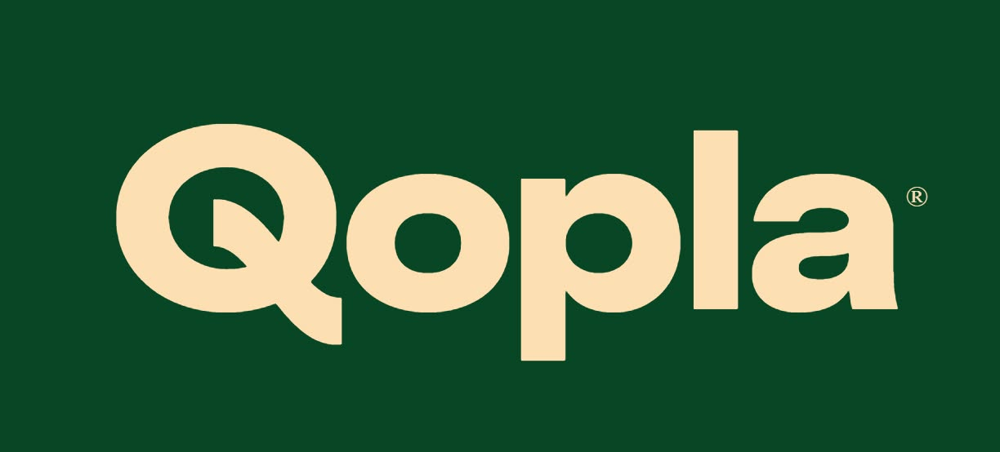

Restaurang & Take Away — Upplands Väsby
Autentiska smaker från Asien — sushi, thai, koreansk mat och mycket mer.
Hämta i restaurangen eller få det levererat — välj det som passar dig bäst.

Välj dina rätter, betala enkelt online — hämta eller få maten levererad.
Beställ via QoplaRing oss — vi hjälper dig med din beställning
Centralvägen 3
194 76 Upplands Väsby
Lunch Mån–Fre 10:30–14:30